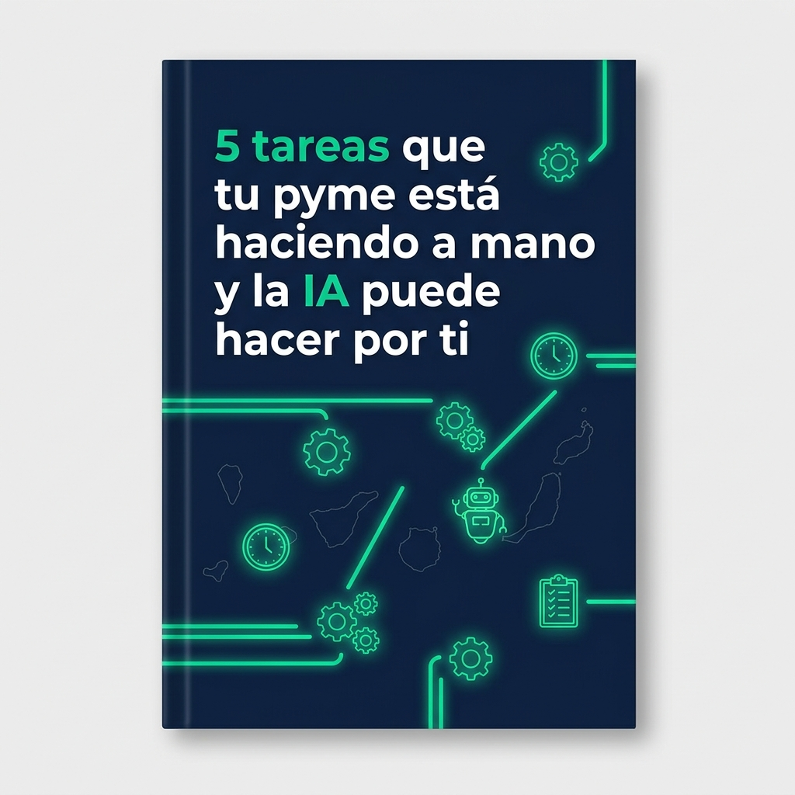

Soy Francisco de Jorge, fundador de CanarIAgentic. Llevo 25 años gestionando negocios reales en Canarias y ahora ayudo a pymes como la tuya a implementar sistemas de IA que captan clientes, responden consultas y automatizan procesos, mientras tú te centras en lo que importa.
Sin compromiso. Sin tecnicismos. Solo una conversación honesta sobre tu negocio.
Soy empresario antes que consultor. Durante 25 años gestioné negocios reales, tomé decisiones con recursos limitados y aprendí lo que ningún curso enseña: que la tecnología solo tiene valor si resuelve un problema concreto de tu negocio.
Hoy combino esa experiencia con formación técnica avanzada en Inteligencia Artificial para diseñar sistemas que realmente funcionan, adaptados a cómo trabaja tu equipo, no al revés.
25 años gestionando pymes. Hablo tu idioma porque he estado exactamente donde estás tú ahora mismo, tomando decisiones con recursos limitados.
Implemento sistemas de Inteligencia Artificial avanzada con herramientas como CrewAI, LangGraph y Make. No simples automatizaciones, sino agentes que razonan.
Conozco el tejido empresarial canario. Estoy aquí, cerca de tu negocio, para asegurar que los sistemas de IA se adaptan a la realidad local de las islas.
Un taller pierde de media entre 3 y 5 clientes potenciales cada semana porque nadie responde fuera del horario laboral. Implementé un sistema que atiende consultas las 24 horas, agenda citas automáticamente y avisa al equipo cada mañana con el resumen del día. Sin contratar a nadie. Sin cambiar cómo trabaja el taller.
Trabajo con pymes de servicios y comercio local que quieren dejar de perder clientes y tiempo en tareas que una IA puede hacer por ellas.
Pierdes clientes cada noche que nadie responde al teléfono.
Tu recepcionista no puede atender a todos a la vez.
Los leads llegan a cualquier hora y el seguimiento se pierde.
Las consultas de reserva se acumulan sin respuesta rápida.
Gestionar reservas y consultas te roba tiempo que necesitas en sala.
Los interesados preguntan y si no respondes rápido, se van a la competencia.
Tu tienda cierra, pero tus clientes potenciales siguen navegando.
Responde 6 preguntas sobre tu negocio y te diremos exactamente qué procesos puedes automatizar y cuánto tiempo y dinero puedes recuperar.
Sin registros previos. Sin compromisos. Solo responde y recibe tu informe personalizado.
Pregunta 1 de 6
Pregunta 2 de 6
Pregunta 3 de 6
Pregunta 4 de 6
Pregunta 5 de 6
Pregunta 6 de 6
Basándonos en tus respuestas, hemos identificado al menos 3 áreas donde la IA puede trabajar por ti de forma inmediata: atención a clientes fuera de horario, seguimiento automático de consultas y reducción de tareas manuales repetitivas. Te enviamos el informe completo con recomendaciones específicas para tu sector a tu email.
También puedes agendar directamente una llamada gratuita de 30 minutos con Francisco para revisar los resultados juntos.
Escrita desde la experiencia real de gestionar negocios en Canarias, no desde un despacho.
Si prefieres ir directo al grano, agenda una llamada gratuita de 30 minutos y lo analizamos juntos.

Agenda una llamada gratuita de 30 minutos con Francisco. Analizamos juntos qué procesos de tu negocio puedes automatizar y te digo honestamente si la IA puede ayudarte o no.
"Si en esa llamada concluimos que no es el momento o que no encaja, te lo digo sin problema. No vendo por vender."
Me cuentas cómo funciona tu día a día y dónde sientes que pierdes más tiempo o clientes.
Te digo exactamente qué se puede automatizar en tu caso concreto y qué impacto puedes esperar.
Aunque no sigamos trabajando juntos, sales de la llamada con claridad sobre los próximos pasos.
Selecciona el día y hora que mejor encaje en tu agenda. Serán 30 min sin compromiso para descubrir cómo la IA puede multiplicar el rendimiento de tu negocio.
¿Prefieres escribirme primero? Sin problema.
💬 Escríbeme por WhatsApp